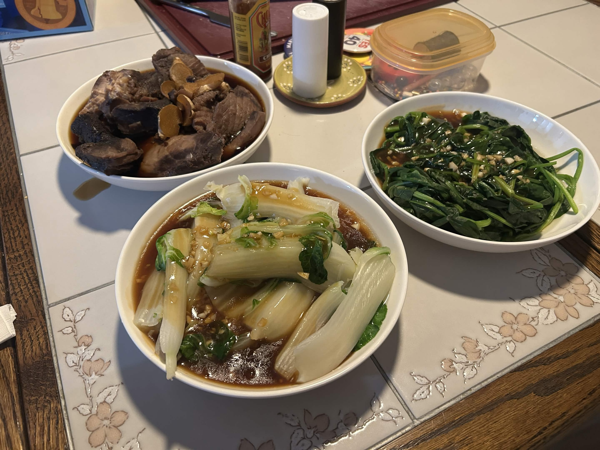
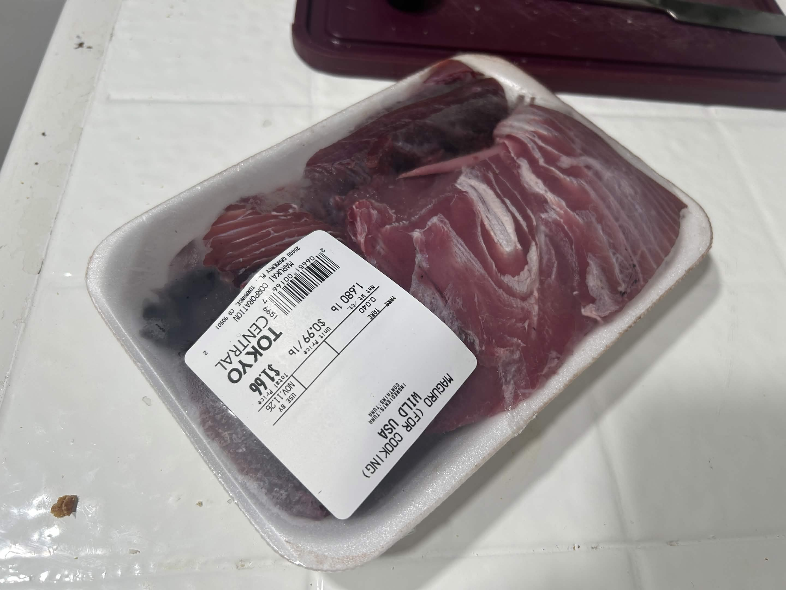
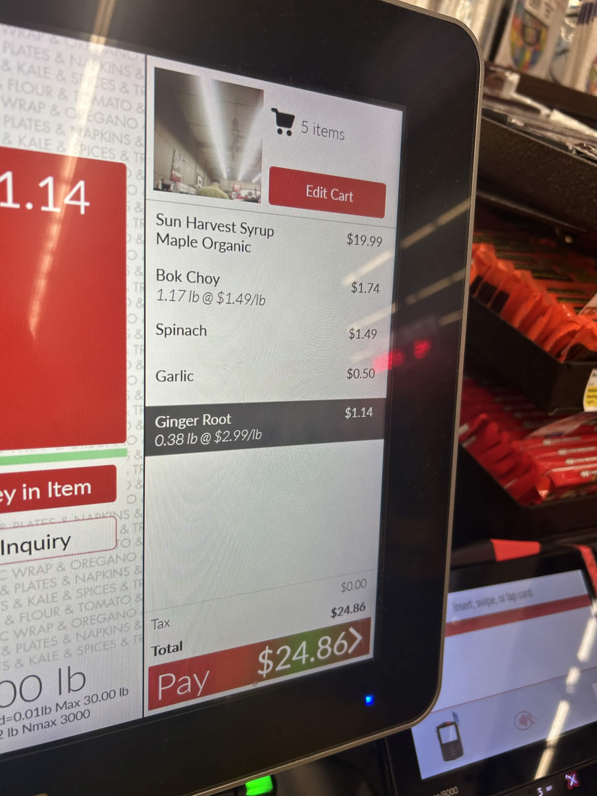

this "blogpost" goes out to my roommate's girlfriend, who asked if i was going to write a recipe for what i was cooking. i was like, "absolutely not, this was a disaster" but then i sat down and got some food in my stomach and now i see the gratification and closure of having all my friends read about what happened to me.
or at least my friends who bother to click on the link and actually read this.
i'd love to know who's reading these but since i MADE THIS WEBSITE MYSELF with RAW HTML ONLY i dont really have any of that 'analytics' stuff
if anybody else lives in the west LA area and wants to know where to buy cheap fish, the answer is the marukai market on pico & bundy.
i got 1.6 pounds of tuna at $0.99 a pound. 99 CENTS PER POUND!! IN THIS ECONOMY????

it's because these are the offcuts that they can't sell in their sushi. but unfortuantely, that also means it's not sushi-quality fish; so i have to cook it, not eat it raw. usually i pick up their salmon, which goes for like $2 per pound if i remember right, but they didn't have any this time. but there's no way i could pass up ONE DOLLAR FISH ! ! !
problem: i've never cooked tuna before so i was like, wtf do i do?
i ended up following this recipe from sudachi recipes for japanese-style simmered fish. finding a recipe, ANY recipe, to follow was an absolute pain -- turns out all the recipes on the western internet for tuna either call for raw tuna, or canned tuna. what if a guy like me wants to cook tuna filets?? well you're outta lucky buddy. i guess. idk man
for some context i've only really cooked fish like 3 times before in my life, it's something i've been really scared of for a long time. but there's only one way to learn!!
anyways, the recipe's not bad, but i kind of didn't have the right pot size and comically stuffed way too much fish into way too small of a pot. that was blunder #1
blunder #2 was adding way too much water to cover all the fish, since i had a lot more fish than the original recipe called for.
this resulted in me having WAY more liquid than the recipe called for, which didn't simmer down into a thick sauce AT ALL. i ended up removing the fish once cooked (i didn't want to overcook it, that seemed bad...) and then pouring the sauce into a separate pan to simmer down further. i'd say i ended up simmering away half the liquid and it still didn't really thicken at all. oops!
bonus blunder #3: the fish i got from marukai was in all different sizes of cuts, since it's just the scraps. i think they cooked up alright anyways, but next time i'd probably pre-cut the fish into smaller pieces and cook it for less time (and in less water)
truth be told though, there probably won't be a "next time" for this particular recipe...
the next time i pick up a cheap cut of fish, i'll probably ask my parents how they'd cook it and see if chinese cuisine has any good advice for me.
on the side, i cooked up bok choy and spinach following these steps from 'takes two eggs'
for some reason, the sauce came out waaaay too thick and i had to add a ton of water to thin it down. even then it's still pretty gloopy. but that might be my fault because i eyeballed all the ingredients, i didn't measure anything, so maybe i just added way too much cornstarch without realizing.
you know how i mentioned that the fish was really cheap? THIS ENTIRE MEAL WAS REALLY CHEAP!!
so for $5.71 plus rice and pantry sauces, this ended up making enough food to probably feed 4-5 people?

world's most comical grocery checkout. i needed the maple syrup for something else. it's giving 'someone who is good at economy please help me budget this. my family is dying / spend less on maple syrup / no'
so if you didn't already know, i put ubuntu onto my laptop to dual-boot for the sake of learning all this website development stuff (since the main resources i'm following are mostly geared towards linux or mac, nobody seems to really do web dev on windows.) at any rate it'll do me some good to have less michaelslop in my life. anyways, i haven't really set up my browser correctly yet, which is to say i haven't turned off duck duck go's AI overviews yet. i tried to search "what do you call one ginger" and you know what it told me?
"one ginger is commonly referred to as a 'redhead.' the term 'ginger' is also used, especially in british and irish contexts."
THANKS DUCK DUCK GO AI! i'm sure that's what i was asking!!!
i've decided to perpetuate the grand tradition of hiding my major life update news in seemingly innocuous contexts.
i recently put my game dev work on hiatus because i was crazy burnt out on it. i applied to a job at a balloon decoration company so now i'm working a full 40 hours a week blowing up balloons i guess?? so now... by day i assemble balloons... i'm learning to code websites by hand... and i'm cooking amazing food for just over $1 per meal with only minor panic breakdowns in the middle when everything goes wrong.
you WISH you could be me :3
(reach out to me for more stories from the balloon factory (haha see this is how i'll get to know who's reading these!))